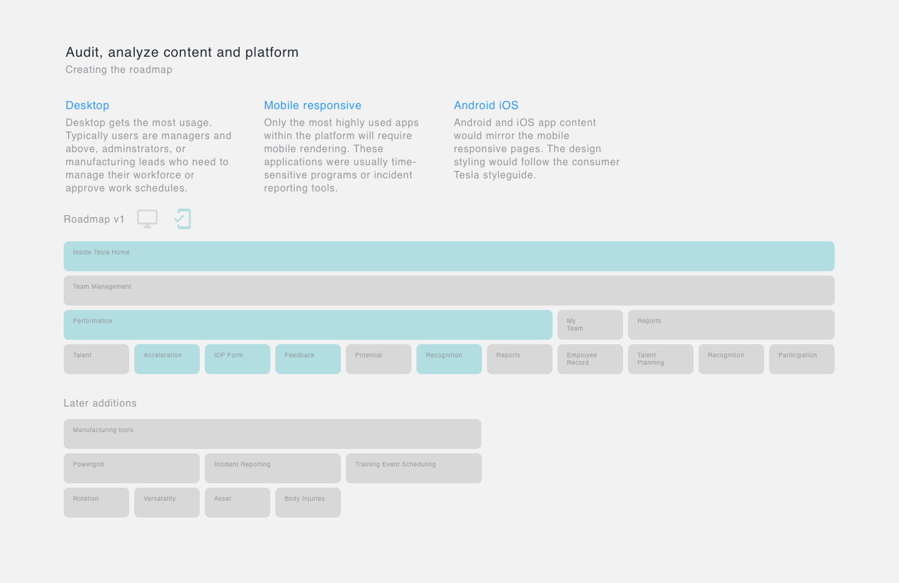

Increasing workforce productivity and efficiency
In June 2018 as Tesla was ramping up on the Model 3 production, I joined the IT team as a senior UX designer. Our team launched Tesla's first people ops product: Inside Tesla.
In June 2018 as Tesla was ramping up on the Model 3 production, I joined the IT team as a senior UX designer. Our team launched Tesla's first people ops product: Inside Tesla.
With a global headcount of 45,000 employees, Tesla had over years of hypergrowth accumulated people data it had yet to leverage into actionable metrics. A small team was assembled to create a platform to capture and present people data to org leaders who could in turn, create more efficient teams and boost productivity.
Upon joining the team, I worked to identify the make up of our team which helped me understand the constraints I needed to work within. By setting up individual meetings with engineers and key stakeholders, I was quickly able to understand the product vision and technology, enabling me to be more thoughtful and strategic in my design decisions.
As I formed closer relationships with the team, I realized they hadn't specialized in UI development, but were interested. I also learned our product owner was new to working with a designer. I grew excited thinking about what the product could become with this group of passionate individuals. Our short term goal was to develop tools for 12,000 manufacturing employees that would enable safer working conditions at factories. However, the overarching goal was to launch many other products to the full 45,000 employees on teams that included sales, service and delivery. This led me to a set of immediate actionables which helped me make design decisions for the short term that was execution-driven, while keeping in mind the strategic need for addressing the long term vision which was quality-driven.
After setting up time with the product owner to understand the roadmap, I began introducing myself to business owners across the organization and gained an understanding of what challenges their workforce faced. This included leaders from SpaceX, Tesla Autopilot, and the manufacturing teams that would all be using the new platform.
In several initial meetings with our product owner, I challenged that we were unclear about the features that would form the platform. I reasoned that we needed to invest time to audit the content we wanted to inform the kind of UI framework necessary to support the features. To support my thesis, I created this visual whcih quickly helped her see the value of an audit. We had lots of features in mind and without the right framework, we would fail in delivering a great user experience.
With an alignment formed to invest in the UI, I began working on a framework that offered the right information architecture. I included the dev team in many of the working sessions that followed, which created transparency, trust and mutual respect.
Through individual 1:1's I learned that many of our engineers hadn't worked with UX before. Setting up the right process was crucial in delivering features ontime while adhering to Tesla's fast-paced style of software development. I set about adopting the lean UX design process which could match the pace of innovation at Tesla. This process was very different from my experience at Shutterstock, which adopted a more rigid design process which focused on quality rather than speed.
To aid in quality and pace of delivery of features, I initiated design-dev pairing. I also began to evangelize the lean UX process with new process owners to set the right expectations and helped ensure meetings were faciliated to achieve the desired outcomes. This was crucial because our team was working with a diverse group, many of whom had not worked with software development teams before.
Adopting new processes is never an easy thing. This is true at Tesla where any form of process is categorically avoided. I wasn't upset, but instead focused on gaining alignment through mutual interests and coming up with solutions. One of the most important adjustments I made was to simply reframe the subject. Instead of calling it a process, I called it a framework aimed to consistently produce good outcomes. This involved conducting user research, guerilla usability studies and sharing of design findings / artifacts such as journey maps and personas. Over a short period of time, by showing (sometimes without permission) and by delivering good results, the team gradually embraced the new "proces".
With the team and process owners alignning on a process, we were stabilizing. While a UI Engineer and I worked on finalizing the framework and tackling design debt accrued from this massive shift, I was also working on other products on our platform. Each needed to be rapidly prototyped and validated in the lean design methodology. We shipped small features rapidly with the goal of learning as quickly as possible.
To keep up with the pace, I created a platform style guide to ensure consistency between experiences. The style guide also helped engineers with front-end development by offering the proper guidelines. The basic library enabled short-term execution without sacrificing (too much) quality. In the meantime, I formulated a plan with a few enthusiastic UI engineers to create an enterprise design system that the entire IT org could use to reduce redundancy by using reusable components.
In a short amount of time, we delivered to the organization a suite of several MVP products that could help Tesla scale its operations quickly. To be sure, the products weren't always pretty to look at, but our goal was to deliver functionality over aesthetics and a rigid process.
Theres nothing quite like hearing back from users who go out of their way to thank you for a job well done. Below are a few highlights:
Starting somewhere new and adopting new processes is never an easy task. This is especially true if the culture is vastly different from the one you are used to. However, if you invest time into understanding the team, adopt the right tools, and focus on user needs and the business strategy, you can bring people together and ship better products. Here are some strategies I used which enabled me to design quickly at Tesla:
Know your audience: I utlized visual documentation to get alignment often, especially with non-technical and inexperienced folks.
Align early and often: Getting on par with the team quickly was essential in delivering the expected results.
Perfection kills: Undestanding the importance of speed for Tesla allowed me to forgo process and adopt the right tools.
Plan for the future: While I strived to execute for the short term, I always kept in mind how the designs could scale in the long run.
If there was one thing I'd change, it would be to evangelize the lean UX process sooner. I was sensitive to the overall team dynamics, but what was more important was to ship better products immediately. As with many other things in life, it's important to find balance without sacrificing success.